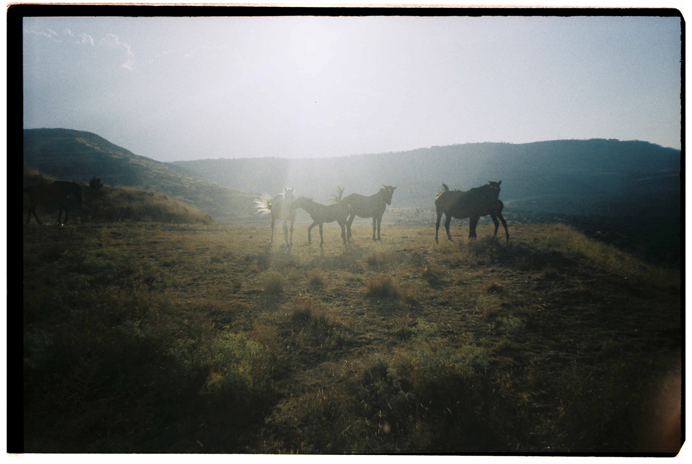

Comida
Comer juntos es parte de la experiencia.
Nuestra cocina
Con la intención de poder concentrarnos totalmente en la experimentación, nuestro equipo de cocina se encarga de preparar todas las comidas del festival. Cada comida y cena es un momento para compartir con el resto de participantes.

Menú vegetariano
Todas las comidas son 100% vegetarianas. Incluye desayuno, comida y cena (desde la cena del lunes 3 de agosto, hasta la comida del domingo 9 de agosto) Podrás indicar tus alergias e intolerancias en el formulario de inscripción

Barra
Ofrecemos una pequeña barra de bebidas como único canal de recaudación para sostener la organización. Su uso contribuye directamente a mantener y desarrollar el proyecto. Consultar más información en el apartado de transparencia.
IMPORTANTE RECORDAR
Al tratarse de un proyecto colaborativo sin ánimo de lucro, la limpieza y el cuidado del espacio son responsabilidad compartida. Aunque hay personas voluntarias, nadie está al servicio de nadie. Las tareas se organizan en grupos e incluyen el mantenimiento de espacios comunes, la gestión de residuos y la limpieza tras las comidas.